Chillax
wq представляет: C H I L L A X
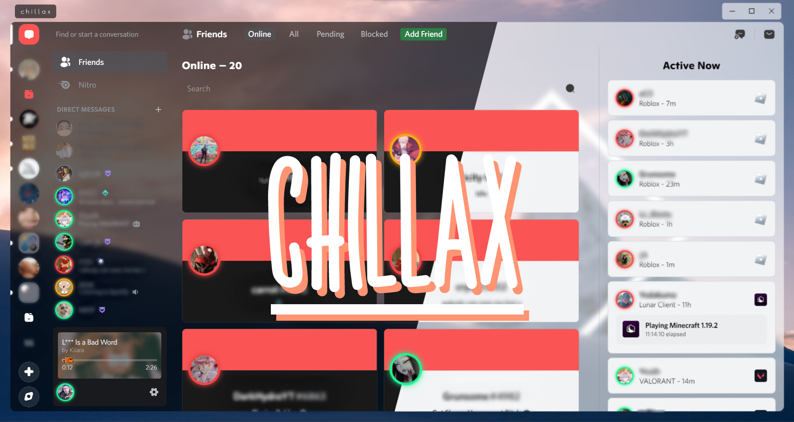
Установка
Чтобы скачать тему на сайте Better Discord:
- Нажмите на кнопку Download.
- Откройте Дискорд и потом идите по пути: Настройки Пользователя > Темы > Open Themes Folder.
- Переместите файл theme.css который вы только что скачали в папку с темами.
- Вернитесь в Дискорд и включите тему.
Чтобы скачать тему из Гитхаба:
- Октройте файл: chillax.theme.css
- Нажмите на кнопку: Raw. После скачайте страницу.
- Откройте Дискорд и потом идите по пути: Настройки Пользователя > Темы > Open Themes Folder..
- Переместите файл theme.css который вы только что скачали в папку с темами.
- Вернитесь в Дискорд и включите тему.
А если вам нужен туториал на YouTube, перейдите по этой ссылке: “https://youtu.be/U0tTENsBS4w”
Что делать, если тема устарела?
Поскольку вы сейчас находитесь на сайте Better Discord, просто скачайте тему заново и откройте папку themes, удалите старую и добавьте новую, которую вы только что скачали.
Помощь
При возникновении проблем с установкой или использованием темы присоединяйтесь к серверу поддержки [https://discord.gg/DrfX6286kF] и попросите о помощи.
Некоторые из наших лучших из лучших
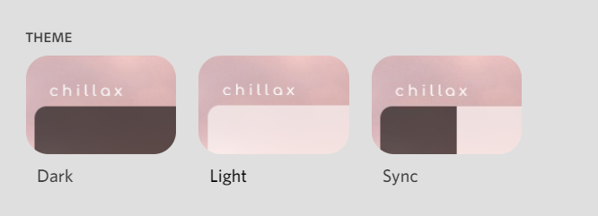
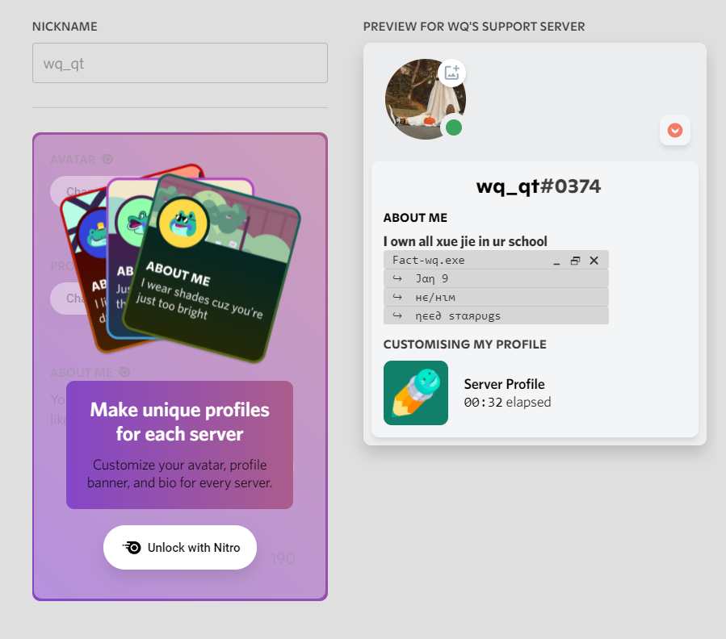
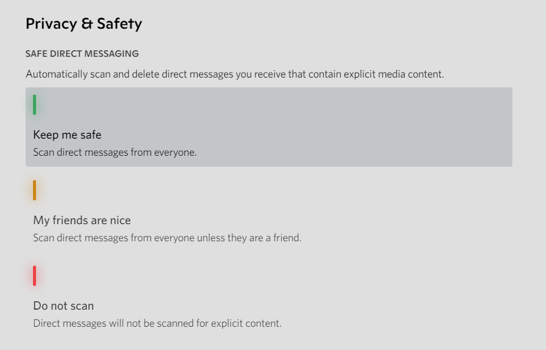
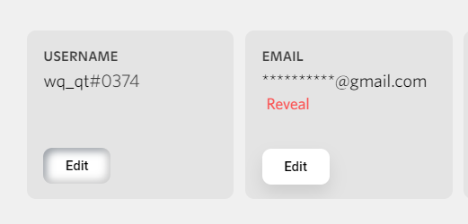
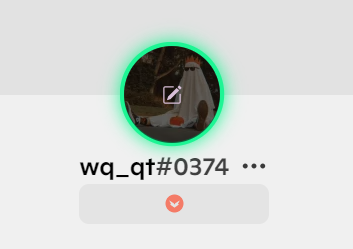
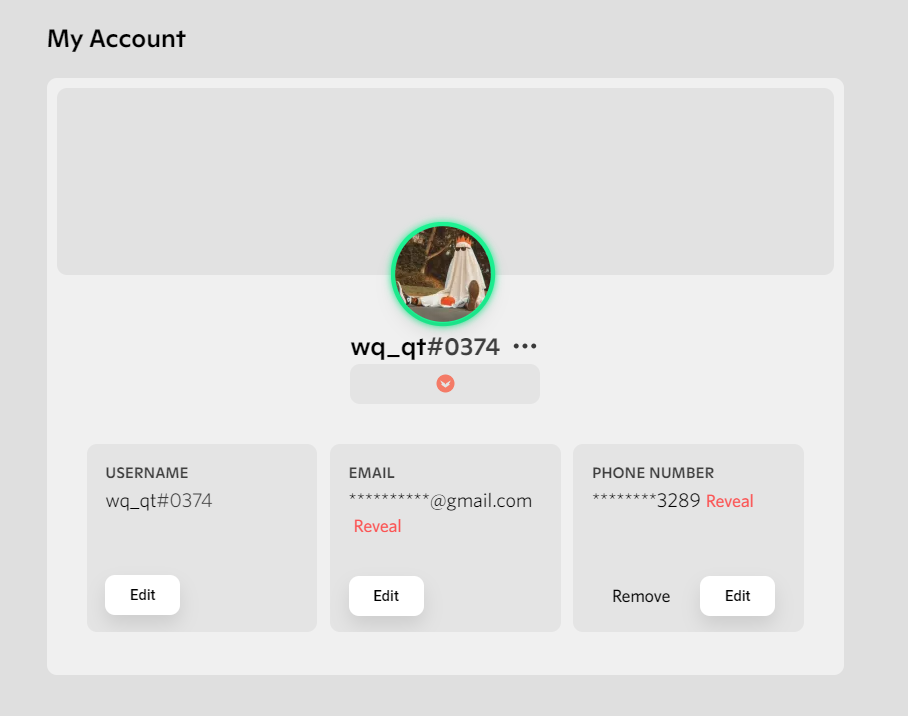
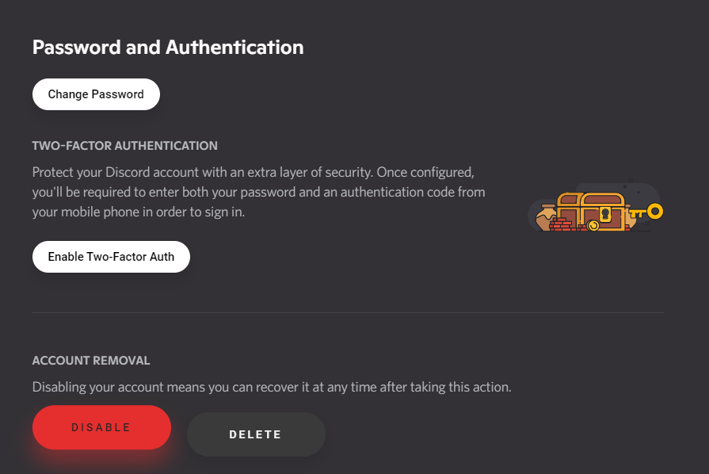
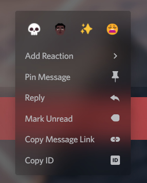
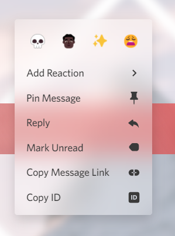
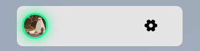

Автор
- › Wq
Помощник:
- › Demented Elmo